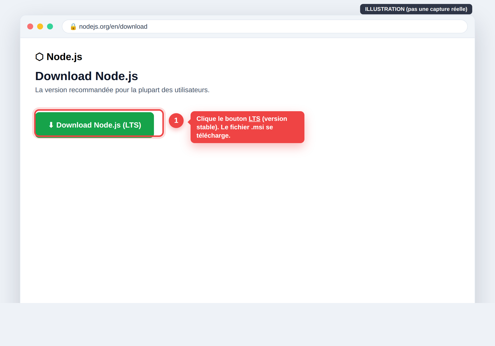

Node.js, Git, VS Code — clic par clic, avec vérifications
Notice 02 / 24 • Guide perso pour Franck • juin 2026
Pour coder, on installe 3 logiciels gratuits, dans l'ordre. Prévois 20 minutes. (Si tu n'as pas de PC maintenant, lis la page « Récupérer le travail » : on peut commencer depuis le navigateur.)
Logiciel 1 — Node.js (le moteur de l'app)
Node.js fait tourner le code de l'application sur ton ordinateur. Il vient avec npm, l'outil qui télécharge les briques toutes faites du projet.

À quoi ressemble la page de téléchargement de Node.js — clique le gros bouton « LTS ».
Repère le bouton avec la mention « LTS » (= la version stable, recommandée). Clique dessus pour télécharger le fichier .msi Windows.
En bas du navigateur, clique sur le fichier téléchargé (ex. node-vXX-x64.msi) pour lancer l'installation.
Une fenêtre s'ouvre : clique Next, coche « I accept… », puis Next à chaque écran (laisse tout par défaut), puis Install. Windows demande l'autorisation : clique Oui.
Quand c'est fini, clique Finish.
✅ Vérifie : Ouvre le menu Démarrer, tape cmd, ouvre « Invite de commandes ». Tape la commande ci-dessous et appuie sur Entrée.
node --version
npm --version
Deux numéros doivent s'afficher (ex. v22.3.0 et 10.8.1). Si oui → c'est réussi ✅.
Logiciel 2 — Git (le carnet de versions)
Git mémorise chaque modification du projet et permet de récupérer/envoyer le code sur GitHub.
Lance le fichier téléchargé, accepte l'accord, clique Suivant.
À l'écran « Tâches supplémentaires », coche « Ajouter à PATH » et « Ajouter l'action Ouvrir avec Code… » (ça aide plus tard). Puis Suivant → Installer → Terminer.
✅ Vérifie : VS Code s'ouvre (un écran de bienvenue). C'est bon ✅.
⚠️ Si une commande « n'est pas reconnue », c'est presque toujours que le terminal était déjà ouvert avant l'installation. Ferme-le et rouvre-le, puis réessaie.
💬 Un mot, Franck
Trois installations, trois vérifications. Si une vérif ne donne pas le bon résultat, ne force pas : reprends l'étape tranquillement, ou envoie-moi le message d'erreur (copie-colle-le à Claude Code). On débloque ça vite.
— Claude, l'assistant que Matthieu (ton beau-frère) a chargé de t'aider 🤝